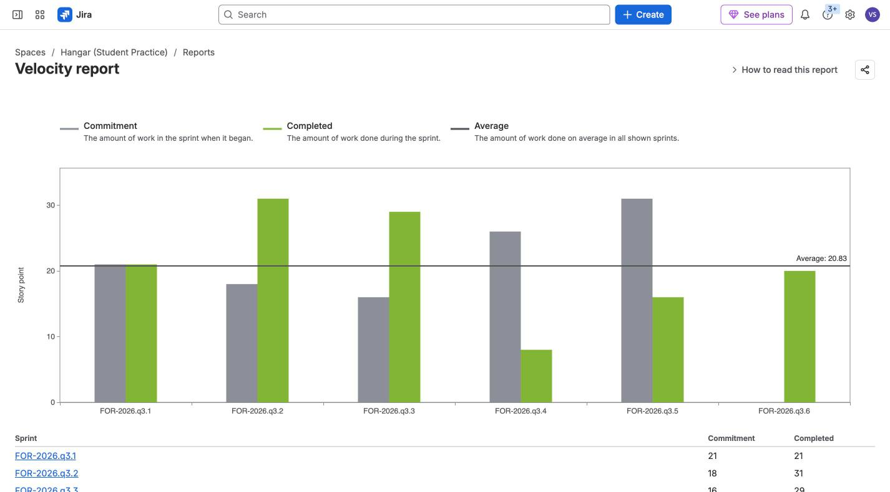

Every sprint leaves a flight recorder: the sprint report, the burndown and the velocity chart. Most teams read the headline number and move on. In this lab you'll open the recorder, learn exactly how Jira computes each number, and investigate six engineered "incidents" that we flew on the live sandbox and measured.
⏱ ~2.5 hLive lab + self-paced6 crash investigations2 simulatorsTurbulence: severe
0 / 20commitment / completed on a sprint where every item was "done". Scenario F.
16 → 29story points "completed" after two mid-sprint re-estimates. Scenario C.
10 ptsof finished work velocity ignored because it was in Ready for Release. Scenario E.
00 Pre-flight briefing
From the flight deckVelocity is a forecasting instrument, not a performance score. An altimeter that reads 2,000 feet too high isn't "optimistic". It's dangerous. Today you'll learn every way Jira's velocity reading can drift, and how to tell drift from reality.
🔒
FLY · reference
Read-only aircraft. Its first two sprints contain a real velocity anomaly we discovered by accident.
🧪
Velocity Forensics
Read-only board in the Hangar space with six sprints, each engineered to show one mechanic. Shared by all 20 pilots.
💺
Your seat board
Yours alone (): a 60-point backlog where you fly real sprints. Open my seat board ↗
Shared-space etiquette for 20 pilots
Only touch items labeled seat-{SEAT} on your seat board. Never start, complete or edit sprints on another seat's board.
The Velocity Forensics board and the FLY space are evidence. Look, don't touch: no edits, no transitions, no comments.
Name your sprints S{SEAT}-2026.q4.1, S{SEAT}-2026.q4.2 and so on, following the team-code naming standard.
Starting and completing sprints needs the Manage Sprints permission in the Hangar space. If the buttons are greyed out, raise your hand.
project = HGR AND labels = seat-{SEAT} ORDER BY Rank ASC
VL-1 How Jira actually computes velocity
⏱ 20 minConcept + demo
After this lesson you can
State the exact rule for Commitment and for Completed.
Explain why the sprint start timestamp decides what counts as committed.
Predict the effect of re-estimates, removals, carry-over and sub-tasks before looking at the chart.
⬛ Commitment (grey bar)
The sum of the board's estimate (here, Story Points) of every item that was in the sprint at the sprint's start date/time, using the estimate as it stood at that moment.
Items removed later still count. Items added after the start don't. Sub-task estimates aren't included.
🟩 Completed (green bar)
The sum of the estimates of items that were in the board's done column (the right-most column) when the sprint was completed, using the estimate at completion, not the original.
Finished work sitting in any other column, such as Ready for Release, scores zero.
The start timestamp is everything
We measured this on the sandbox: Jira stores a sprint's start to the minute. If a sprint starts at 18:20:37, the recorder writes 18:20:00. Anything added to the sprint after that stored timestamp is added after start. It gets an asterisk in the sprint report and is excluded from commitment, even if it was added ten seconds later in the same minute.
Field ruleLoad the sprint, then wait for the clock's minute to roll over before you add late changes, so there's no ambiguity about what was committed. Most real teams never hit this because planning ends minutes before the start. Scripts, imports and "start the sprint then drag the rest in" habits hit it every time.
What the velocity chart is (and isn't)
Property
What it means for you
Board-specific
Two boards over the same space can show different velocity. The board's estimation statistic and column mapping define the numbers.
Last 7 sprints
The chart shows up to the seven most recent completed sprints, and its average line uses what's shown.
Story-level only
Sub-task estimates don't appear in the velocity chart. Put points on the story.
Snapshot at completion
Completed uses the estimate when the sprint closed. Re-estimating finished work changes history.
Not comparable
Points are a team-local currency. Comparing Team A's 40 with Team B's 25 is comparing yen with dollars.
VL-2 The Sprint Report, decoded
⏱ 20 minScreenshot walk-through
The velocity chart tells you that something odd happened. The Sprint Report tells you what. Read it in four sections:
Signal
Where you see it
What it means
* after a key
Any section
Added to the sprint after the start timestamp, so it isn't part of commitment.
3 → 8
Estimate column
Re-estimated during the sprint. The header shows totals the same way, e.g. Story Points (16 → 29).
Completed Issues
Section 1
In the board's done column at completion. The only work that reaches the green bar.
Issues Not Completed
Section 2
Anything else at completion, including Ready for Release.
Issues Removed From Sprint
Section 3
Was in the sprint at start, pulled out later. Still counted in commitment.
Completed outside of this sprint
Extra section when present
Done in another sprint or before it started. Shown, but not credited here.
Scenario E: three finished items in READY FOR RELEASE score zero, one removed item still sits in commitment, and the story whose points live on sub-tasks shows "-".
VL-3 Burndown & scope
⏱ 15 min
Guideline: the grey diagonal from total committed work to zero across the sprint's working days. It's a reference, not a target.
Remaining values (red): steps down when items reach the done column, and up when scope is added or re-estimated upward.
Non-working days: the hatched blocks come from the board's working-days settings. Set them, or every weekend looks like a stall.
Scope change: a red line climbing mid-sprint is scope creep or re-estimation. Open the sprint report to see which.
Scenario F, the backdated start: the sprint "began" on Nov 15, so the burndown sits at zero for two days, then jumps to 20 when the items arrive on Nov 17. Every item carries an asterisk and commitment reads 0.
Accident reportEditing a sprint's start date into the past, to "line it up with the calendar", turns every planned item into scope creep after the fact. The velocity chart then shows a team that "committed to nothing". Fix the dates before starting, never after loading.
VL-4 Six crash investigations
⏱ 30 minEvidence: Velocity Forensics board
Each sprint below was flown on purpose on the Velocity Forensics (read-only) board and measured. The numbers are Jira's own output.
…/projects/HGR/boards/7/reports/velocity

The recorder's summary: six sprints, average 20.83. Every bar pair tells a different story.
A · Clean flight
21 / 21
Pilot saw
Perfect bar pair. Commitment equals completed.
Reality
Five items (5, 3, 8, 2, 3) loaded before the start and all finished.
Root cause
None. This is the baseline.
Prevention
Treat 21/21 as normal, not heroic. Over many sprints it should look boringly similar.
B · Scope creep
18 / 31
Pilot saw
"We beat our commitment by 72%!"
Reality
4 items (18 pts) committed. An exec demo (8) and urgent legal copy (5) were pushed in mid-sprint, marked *.
Root cause
Unplanned work entered after the start. Completed rose, but so did interruption.
Prevention
Track added-after-start points as their own metric. Protect the sprint, or plan a buffer explicitly.
C · Estimate inflation
16 / 29
Pilot saw
Velocity jumped 81% with the same four items.
Reality
Two items re-estimated mid-sprint: 3→8 and 5→13. Completed uses the new values.
Root cause
Re-estimating work in flight rewrites history. Sometimes it's honest learning; often it's padding.
Prevention
Don't re-estimate committed items. Split or create a follow-up instead. Watch for "→" in the sprint report.
D · Carry-over cliff
26 / 8
Pilot saw
Velocity crashed to 8.
Reality
Two items finished (5 + 3). Two were in progress, two never started. 18 points carried to the next sprint.
Root cause
Overcommitment plus parallel starts. Too much WIP, not enough finishing.
Prevention
Stop starting, start finishing. Plan to recent completed, not to hope.
E · The triple trap
31 / 16
Pilot saw
Another weak sprint: 16 of 31.
Reality
18 carried points were committed again. 10 finished points sat in Ready for Release. 8 sub-task points were invisible. A 5-pointer removed mid-sprint still inflated commitment.
Root cause
The chart measured "reached Done", not "work finished by the team".
Prevention
Points on stories, not sub-tasks. Decide what Done means (VL-5). Remove scope before the start, not after.
F · Backdated start
0 / 20
Pilot saw
"The team committed to nothing and delivered 20?"
Reality
The sprint was started with a start date two days in the past. Every item was added after that date, so every item is *.
Root cause
The start timestamp (VL-1) preceded the load.
Prevention
Set dates correctly when you start the sprint. Never backdate after loading. Also the root cause of FLY's 5/31 and 0/29.
project = HGR AND labels = forensics AND labels = scenario-E ORDER BY key ASC
project = HGR AND labels = forensics ORDER BY key ASC
The double-count you can't see on the chartScenario D left 18 points unfinished, and scenario E committed them again. Add up "commitment" across D and E and you get 57, but only 39 points of distinct work were ever planned. Never sum commitments across sprints to describe a quarter's plan.
VL-5 The Ready-for-Release question
⏱ 20 minStructured debate
In a standard-template workflow, the sprint board's columns run … → PO Review → Ready for Release → Done, and the right-most column, Done, means in production. Velocity therefore only credits work that has shipped. When releases lag behind sprints, velocity under-reports, and teams are tempted to "fix" it by moving Done earlier.
✈ Team "Shipped"
Keep Done = in production.
Velocity measures value delivered, not work parked.
Release bottlenecks become visible instead of hidden.
Forecasts answer the real question: "when will customers have it?"
🛠 Team "Accepted"
Map Ready for Release into the done column.
Velocity reflects what the team controls.
Release trains outside the team don't punish sprint metrics.
Sprint reviews match what the sprint board shows.
RecommendationKeep Done = in production for honesty and forecasting. Then measure accepted throughput (items reaching Ready for Release) separately on the dashboard, so the team's output stays visible and the release gap becomes a metric of its own. Whatever you choose, don't change the column mapping mid-quarter, because it rewrites how every past sprint's chart reads.
project = FLY AND status CHANGED TO "Ready for Release" DURING (startOfWeek(-1), endOfWeek(-1))
project = FLY AND status = "Ready for Release" ORDER BY updated ASC
project = HGR AND labels = seat-{SEAT} AND status = "Ready for Release"
VL-6 Cumulative Flow & Control Chart essentials
⏱ 15 min
📈 Cumulative Flow Diagram
One colored band per board column, stacked over time.
Band width is WIP in that column. A widening band means work arrives faster than it leaves.
Horizontal distance across the bands approximates lead time.
Bounce-backs show as the eQE band thinning while Development thickens again.
Flat top band with rising lower bands means nothing is finishing. Check WIP limits.
⏱ Control Chart
Each dot is an item's cycle time across the columns you select.
Select Development → PO Review to measure engineering flow, excluding the release wait.
Outliers above the band are the stories worth a retro. Bounced items usually live there.
Use the rolling average to watch trends. Single dots are anecdotes.
Board-specific: column selection changes the answer.
Pair it with JQLThe Control Chart shows that items were slow. The history query shows which ones bounced. Together they turn "we feel slow" into a specific retro topic.
project = FLY AND status CHANGED FROM "eQE Testing" TO Development
VL-7 Forecasting honestly
⏱ 20 minPairs with the Release Forecaster
Use a range, not a point. Report "3–4 sprints, likely 3", not "2.88 sprints".
Use the last 3–7 comparable sprints. Drop sprints you know are broken (backdated, re-mapped), and say that you did.
Adjust for capacity. Holidays and on-call rotations change the next sprint, not the average.
Never compare teams or rank individuals on points. Points are a local currency.
Forecast probabilistically. Sampling past sprints thousands of times (Monte Carlo) gives a confidence level leadership can use: "85% confident by sprint 4".
Why the average liesThe forensics board averages 20.83, but its sprints range from 8 to 31. A 60-point backlog "needs 2.88 sprints" by the average, yet a couple of sprints like D would push it well beyond 3. Averages hide the bad weather. Run the forecaster below and look at the tail.
SIM Black Box Simulator
Build a sprint and watch Jira's rules compute commitment and completed, item by item. Load a measured scenario to replay the sandbox exactly. Switch on Predict first to hide the numbers until you've committed to an answer; correct predictions on presets earn miles.
● RECORDER ONLINE
Sprint flight recorder
Item
Points at start
In sprint at start?
Re-estimated to
State at completion
Sub-task?
Predict before you look. Scenario: custom
Commitment0
Completed0
FC Release Forecaster (Monte Carlo)
Enter completed values from past sprints and the remaining backlog. The forecaster compares the naive average with 10,000 simulated futures, each built by re-sampling your past sprints.
Prefilled with the forensics board's completed values and one seat backlog (60 points).
–Average says
–50% confident
–85% confident
–95% confident
Missions
Your aircraft for these missionsYou're flying . Board: open my seat board ↗. Everything you create gets the label seat-{SEAT}.
MISSION VL-M1
Forensics walk-through
Turbulence
Mission brief Read-only investigation. Open the evidence and fill in the incident log yourself before you read VL-4's answers.
Step 4: q3.5, whose 31-point commitment includes the 18 points carried from q3.4.
+350 mi
MISSION VL-M2
Root-cause the FLY anomaly
Turbulence
Mission brief The FLY reference aircraft's velocity chart shows 5 / 31 for JET-2026.q4.1 and 0 / 29 for JET-2026.q4.2. A director thinks the team "doesn't plan". Prove or disprove it with evidence only.
The evidence (open it yourself before reading the debrief).Show debrief
Only FLY-7 (5 points) was in the sprint before its stored start timestamp. FLY-8 to FLY-14 were added seconds later in the same minute, so they carry * and are excluded from commitment. Hence commitment 5. Completed counts everything in Done at completion, so 31. In JET-2026.q4.2 every item has *, so commitment is 0. The team didn't "fail to plan". The recorder's start time preceded the load. Verdict: instrument error, not crew error. Recommend annotating the chart and excluding these two sprints from forecasts.
+400 mi
MISSION VL-M3
Fly your own sprint (predict, then verify)
Turbulence
Mission brief On your seat board ↗, fly a sprint with three deliberate "incidents". Predict the velocity bars before you open the report.
In the backlog, Create sprint and name it S{SEAT}-2026.q4.1.
Drag in exactly 18 points: pre-order a meal (5), allergen info (3), reminder to pre-order (2), change my pre-order (3), premium meal with saved card (5).
Start sprint, leaving the start date as now. Look at the clock and wait until the minute changes. This is the whole lesson of VL-1.
Incident 1: drag catering pre-order counts (5) into the active sprint.
Incident 2: re-estimate allergen info from 3 to 5.
Incident 3: move change my pre-order to Ready for Release.
Move pre-order a meal and allergen info to Done.
Write your prediction for commitment and completed, then Complete sprint and choose to move open items to a new sprint (you'll need them in VL-M4).
Open your seat board's Reports → Velocity report and sprint report. Compare.
project = HGR AND labels = seat-{SEAT} AND sprint in openSprints() ORDER BY status ASC
Show debrief
Commitment 18: the five items loaded before the stored start. Completed 10: pre-order (5) + allergen info at its new estimate (5). The catering item carries * and isn't committed. Change my pre-order is finished but in Ready for Release, so it scores zero. If commitment shows 23, the catering item went in before you clicked Start: it has no * in the sprint report. If your completed is 8, you re-estimated after completing the sprint. Load the same situation into the Black Box Simulator to confirm.
+600 mi
MISSION VL-M4
Carry-over and removed scope
Turbulence
Mission brief Second sprint on your seat. Watch carry-over get committed twice, and watch a removal stay in commitment.
Rename the new sprint Jira created to S{SEAT}-2026.q4.2. It should already hold your four open items: reminder (2), change pre-order (3, in Ready for Release), premium meal (5) and catering counts (5).
Before starting, add rate my meal (1) and "sold out" (3).
Predict the commitment, then start the sprint and wait for the minute to roll over.
Remove "sold out" from the sprint (back to backlog).
Move change pre-order, premium meal and reminder to Done. Leave the rest.
Predict completed, complete the sprint (open items to backlog), and check the velocity chart, which now has two sprints.
Show debrief
Commitment 19 = 2 + 3 + 5 + 5 + 1 + 3. The catering item, which was * in sprint 1, is committed normally now, and the removed "sold out" still counts. Completed 10 = 3 + 5 + 2. Across the two sprints, committed points sum to 37 (18 + 19), but only 27 distinct points of work were ever planned. That's the carry-over double count from scenario E. If you sent open items to the backlog in VL-M3, your commitment will be lower; work out the difference from the sprint report.
+600 mi
MISSION VL-M5
The sub-task trap experiment
Turbulence
Mission brief Prove to yourself that sub-task points don't reach the velocity chart.
Open S{SEAT} · As a traveler, I can leave a tip for the cabin crew. It has no estimate. Leave it that way.
Create two sub-tasks under it, tip amount UI (3 points) and tip payment (5 points). Add the label seat-{SEAT} to each sub-task, or your board's filter won't show them.
Create sprint S{SEAT}-2026.q4.3 with the tip story and the meal photos bug (2). Start it and wait for the minute to roll over.
Move both sub-tasks, the story and the bug to Done. Complete the sprint.
Predict, then check the velocity chart's third bar pair.
project = HGR AND labels = seat-{SEAT} AND type = Sub-task
Show debrief
2 / 2. Eight points of real work vanished, exactly like scenario E's excess-baggage story. Rule: estimate the story; use sub-tasks for tracking, hours or checklists, not points.
+450 mi
MISSION VL-M6
Leadership brief: "Why did velocity drop 50%?"
Turbulence
Mission brief A director looks at the forensics chart and sees q3.2 at 31 and q3.5 at 16: "velocity halved". Write exactly five sentences they'll read, using evidence from the board, and paste them as a comment on your seat epic S{SEAT} · Meal Pre-order.
Show a model answer
"The drop from 31 to 16 is mostly how Jira counts, not how much the team delivered. Sprint q3.2's 31 included 13 points of urgent work added mid-sprint, so it overstated our planned pace. In q3.5 the team also finished 10 points that were waiting for a release and 8 points recorded on sub-tasks, none of which the chart credits. We'll freeze sprint scope after the start and put estimates on stories, and we'll show accepted-but-unreleased work on the dashboard. Our honest planning range is 16–29 points per sprint, which puts the 60-point backlog at 3–4 sprints."
+700 mi
✓ Black box checkride
Ten questions, all grounded in what we measured. 80% to pass.
1. You click Start sprint at 09:00:40, then 10 seconds later drag in one more 5-point story. Is it in the commitment?
The start is stored at minute precision (09:00:00). Anything added after that timestamp counts as added after start.
2. A committed 3-point story is re-estimated to 8 mid-sprint and finished. What does it add to Completed?
Completed uses the estimate at completion. That's how scenario C went from 16 to 29.
3. At sprint completion, a finished 5-point story sits in Ready for Release (not the board's right-most column). Its contribution to Completed is…
Only items in the board's done column count. Scenario E lost 10 points this way.
4. A 5-point item in the sprint at start is removed mid-sprint. What happens?
Commitment is a snapshot at the start. The removal shows in the sprint report.
5. A story with no estimate has three Done sub-tasks worth 2 + 3 + 3. What do they add to velocity?
Sub-task estimates aren't included in the velocity chart. The story shows "-".
6. A sprint is started with a start date two days in the past, after all items were loaded today. Commitment will be…
Scenario F: 0 / 20. The same mechanism caused FLY's 5 / 31 and 0 / 29.
7. Sprint D left 18 points unfinished, and they were committed again in sprint E. Summing commitment across D and E to describe "planned work" will…
57 committed points across D and E, but only 39 distinct points of work.
8. Two boards show the same space. One maps Ready for Release into its done column, the other doesn't. Their velocity charts will…
The board defines what "done" means for its reports.
9. Past completed values are 21, 31, 29, 8, 16, 20, and 60 points remain. Which forecast is most honest?
Averages hide variance. A Monte Carlo forecast gives confidence levels. Run the Release Forecaster to see this team's tail.
10. Which use of velocity is legitimate?
Points are a team-local currency. Use velocity to forecast, not to judge.